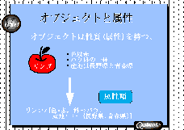

<html>
<head>
<title> Slide No.8 </title>
</head>

<frameset rows="430,130">

<noframes>
<body>
<a href="GIF/slide8.GIF"></a>

<a href="AU/voice8.au">
	</a>[268K]<p>
<!--		-->
例えば、リンゴは、
「色は赤、バラ科の一種、産地は長野県と青森県」などという
性質を持っているように、一般にオブジェクトは性質(属性とも言いますが)を
持っています。<p>

<b> Quixote </b> では、オブジェクトとその性質を
<a href=""> 属性項 </a> と呼んでいる項で記述できます。<p>

矢印の下に書かれたものが、リンゴと先ほど挙げた性質を
記述した属性項です。
この例から分かるように、性質を記述するのに
<b> Quixote </b> では集合も使えます。
<p>
<!--		-->

<hr>
<a href="slide9.html" target="_top">次の OHP へ</a>
<br><br>
<a href="slide7.html" target="_top">前の OHP へ</a>
<br><br>
<a href="HomePage.html" target="_top">OHP の一覧へ</a>
</body>
</noframes>

<frame src="onlyslide8.html">
<frame src="buttonexpla8.html">

</frameset>

</html>
